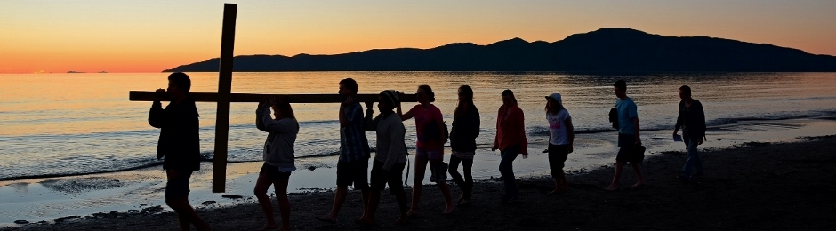

Anglican Parish of Kapiti
Website
Home
Sunday Services
Parish Values
Parish Groups
Contacting us

Parish Values
Page under review.
Back to Home »
Fast Links
Sunday Services PDF
Messy Church: What is it? PDF
News Sheet PDF
Parish Groups PDF
Preschool Music & Playgroup PDF
Messy Church (Facebook)
Kapiti Anglican Youth
(KAYG)
Parish Staff and Contacts PDF
Additional Links
Anglican Taonga
Anglican Diocese of Wellington
Anglicans Down Under blog
Wellington Cursillo
Liturgy
The Anglican Centre in Rome
The Anglican Communion